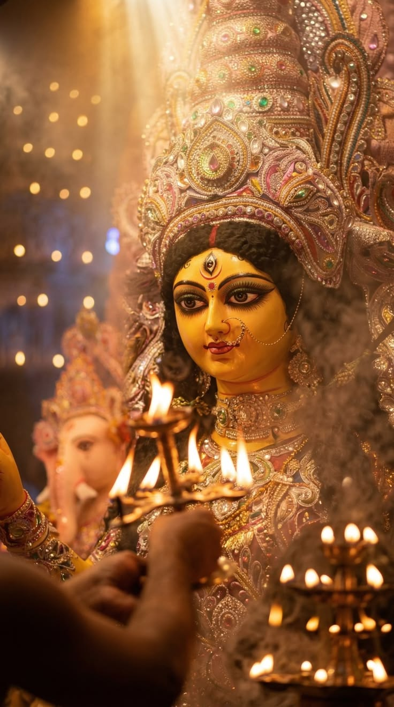
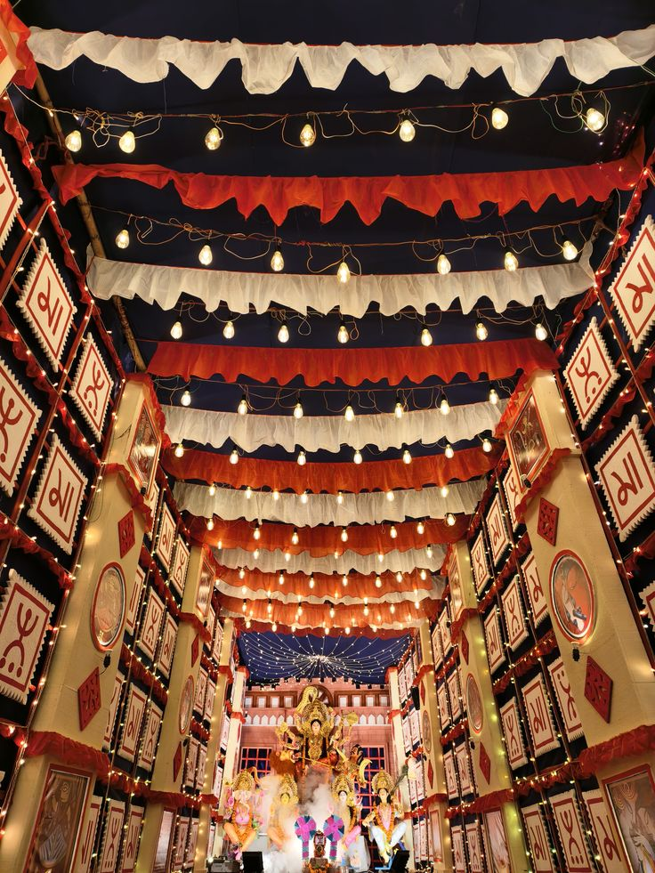
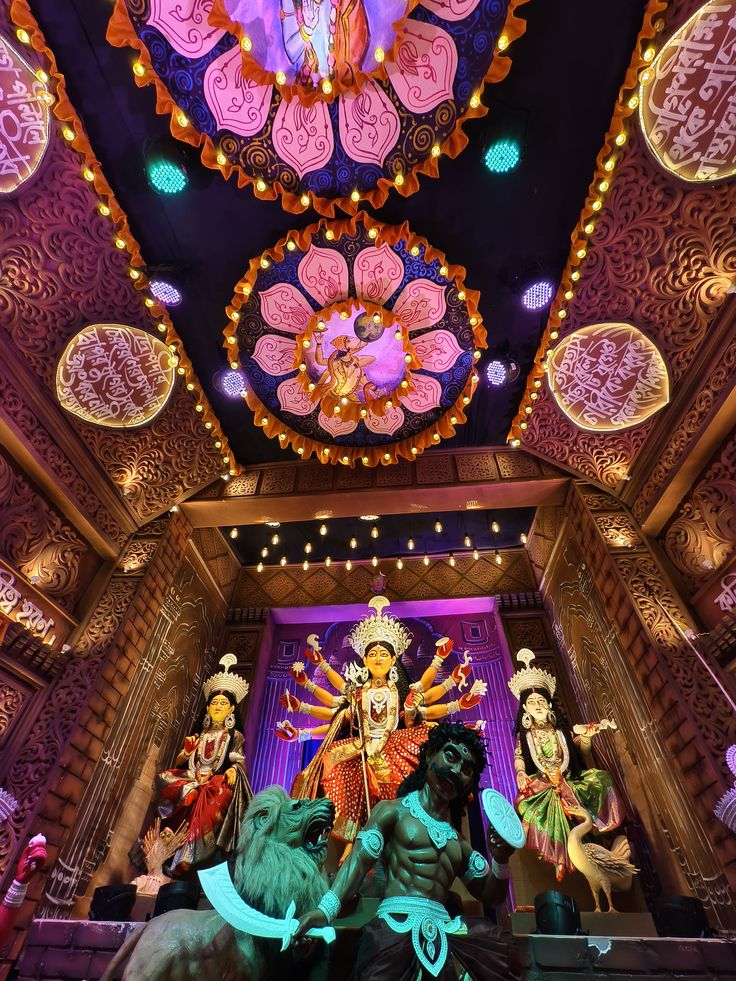
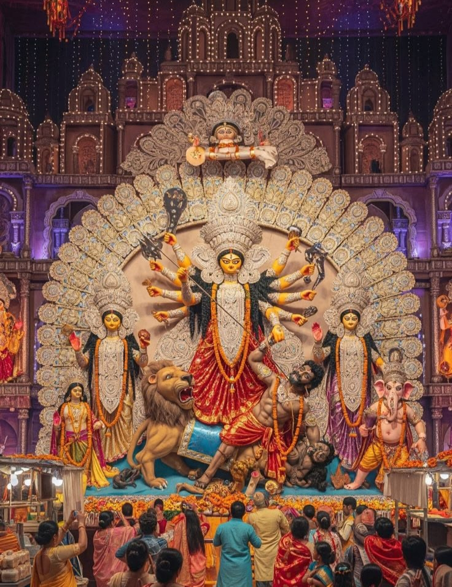

Welcome to the devotional world of Maa Durga. Explore the Ashanagar area of Bihar Sharif, learn about Durga Puja, view festival-inspired photographs and find the general location.
📍 View Location 🔔 Aarti SectionDevotion, faith and the celebration of Maa Durga in Bihar Sharif, Nalanda, Bihar.

Ashanagar is a locality in Bihar Sharif, Nalanda district, Bihar. This page provides a general visitor guide for the Durga Puja season.
Durga Puja is celebrated to honour Maa Durga, who symbolizes courage, strength and the victory of good over evil.
Devotees offer prayers, participate in religious rituals and seek blessings for their families.
The exact 2026 pandal design, idol details, programme and aarti timings should be confirmed with the local puja committee.
Find Ashanagar in Bihar Sharif, Nalanda, Bihar. The map below searches the general locality, not a verified pandal entrance.
Area: Ashanagar
City: Bihar Sharif
District: Nalanda
State: Bihar, India
Note: This map searches the general Ashanagar area. Confirm the exact pandal location with local organisers before travelling.
Festival-inspired photographs and religious artwork.

✨ Festival Decoration

🙏 Religious Artwork

🌺 Festival Atmosphere
Important: These are illustrative images, not verified photographs of the Ashanagar Durga Puja pandal in 2026. Replace them with genuine local photos when available and when you have permission to use them.
Devotees worship Maa Durga and pray for peace, courage, happiness and prosperity. Follow the rituals and instructions announced by the local organisers.
Pushpanjali is a devotional offering of flowers during worship. Ask the local committee for the date and time of the ceremony.
Many devotees participate in evening aarti during Durga Puja. The exact Ashanagar 2026 aarti schedule has not been verified. Please confirm it locally.
Listen to an aarti recording by adding an audio file that you have permission to use.
May Maa Durga bless everyone with strength, peace and happiness.
To enable the sound, upload your permitted audio file named maa-durga.mp3 into the same GitHub repository as this HTML file. The website does not include an audio recording.